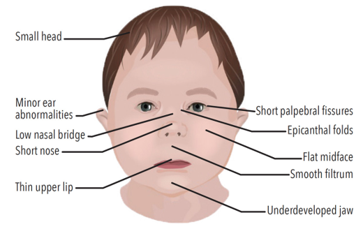
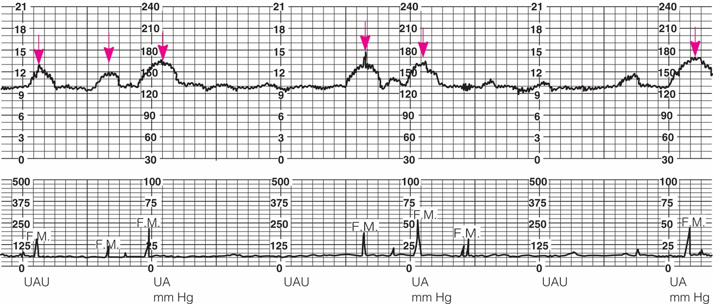
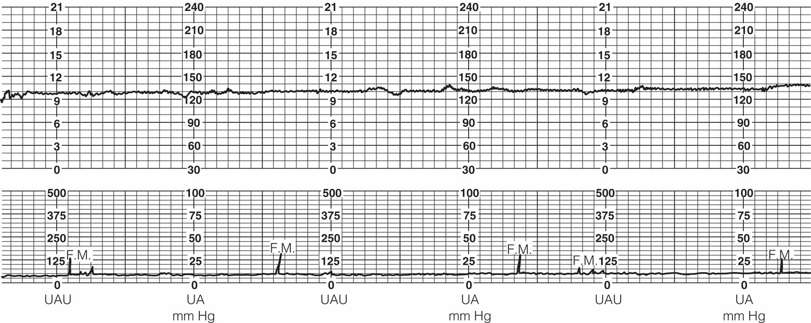
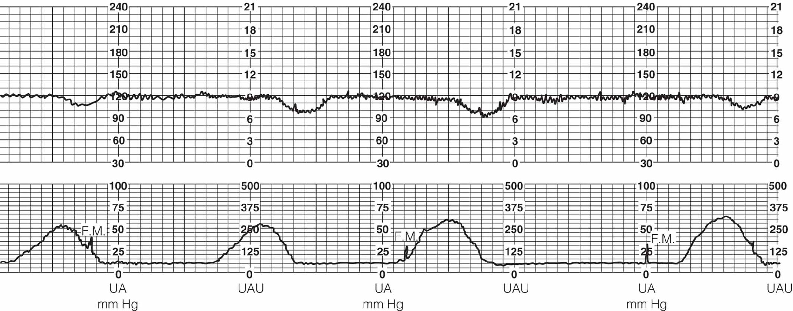

Week 2 · Topic 1
Antepartum Care II
Common Pregnancy Discomforts
A frequent test topic: know the discomfort, why it happens, and how to relieve it.
| Discomfort | Why It Happens | Relief / Management |
|---|---|---|
| Nausea & vomiting | Increased hCG, especially early in pregnancy | Dry crackers or toast before rising; small frequent meals; avoid greasy/spicy foods; carbonated beverages; antiemetics if severe |
| Urinary frequency | Uterus pressing on the bladder | Void every 2 hours during the day |
| Fatigue | Hormonal; worse with other children or a busy schedule | Encourage good rest periods |
| Breast tenderness | Increased progesterone & estrogen; larger breasts | Wear a supportive bra |
| Leukorrhea (increased vaginal discharge) | Natural secretions that lubricate and prevent infection; milky white, thin, mild/no odor | Daily bathing, cotton underwear; normal — not a cause for alarm |
| Nasal stuffiness | Increased estrogen levels | Cool-air vaporizer; normal saline nasal spray |
| Heartburn | Uterus displaces the stomach; esophageal sphincter relaxes | Non-sodium antacids as recommended by provider |
| Ankle edema | Decreased venous return from lower extremities | Avoid prolonged sitting/standing; elevate feet and legs |
| Varicose veins | Decreased circulation to lower extremities; weight gain | Regular exercise; avoid prolonged sitting/standing |
| Flatulence / gas | Decreased GI motility; uterus pressing on large intestines | Avoid gas-producing foods; regular bowel habits |
| Hemorrhoids | Constipation, increased progesterone, iron supplements, decreased motility → hardened stool | Gentle self-reduction, topical ointments, warm soaks & sitz baths |
| Constipation | Iron supplements, decreased motility, increased progesterone | Increase fluids and roughage; daily exercise; regular bowel habits |
| Backache | Softening of cartilage/joints and lordosis of the back | Pelvic tilt exercises, good posture, avoid fatigue, good body mechanics |
| Leg cramps | Uterus pressure on nerves; poor circulation | Massage, warm soaks, stretching (dorsiflex the foot to stretch the calf) |
| Faintness | Changes in blood volume, postural hypotension, possible anemia | Sit down and lower head between knees; avoid standing in one place too long |
| Shortness of breath | Uterus pushes up on the diaphragm | Good posture when sitting; prop up in bed |
| Difficulty sleeping | Nocturia, active baby, enlarged uterus, leg cramps | Maximize comfort with pillows; avoid caffeine |
| Round ligament pain | Ligaments stretching to support the enlarging uterus | Warmth; pain medication if needed (one of the most common complaints) |
| Carpal tunnel syndrome | Compression of the median nerve in the wrist | Avoid repetitive hand movements; wrist splints; may resolve after delivery (occasionally needs surgery) |
Shortness of breath vs. dyspnea: Normal SOB follows activity (e.g., climbing stairs) and resolves with a few minutes of rest. Dyspnea is difficulty breathing that occurs even at rest, when the patient wasn't doing anything — check a pulse ox and listen to lung sounds.
Self-Care During Pregnancy
Fetal movement / kick counts
- Movement felt ~16–22 weeks (most by 20 weeks; earlier if not the first baby)
- Check the same time each day; lie on the side ~1 hour after eating
- <2 movements in a 2-hour period (after eating, drinking, emptying the bladder) → contact provider
Breast care
- Supportive bra; keep breasts clean
- No soap on the nipples — it dries them out
- Breast/nipple shield for flat or inverted nipples, worn the last 3–4 weeks to train the nipple to be more erect
Clothing & hygiene
- Avoid high heels (center of gravity is off) and restrictive clothing
- Daily bathing (culture-dependent); at least keep the perineal area clean
- Avoid hyperthermia in the first trimester (no hot tubs / overly warm water) during early fetal development
Employment & travel
- Can work until labor starts unless complications; watch environmental hazards (heavy lifting, chemicals) and adjust the job as needed
- Travel is fine unless complications; airlines may restrict late gestation
- Car trips: frequent breaks to stretch; seat belt with the lap belt under the abdomen; be evaluated after any accident
Exercise
- "Not the time to learn a new sport," but staying active is good
- Eat an additional 300 kcal/day; avoid overheating
- Benefits: self-image, energy, sleep, tension relief, weight control, bowel function
- Kegel exercises strengthen the pelvic floor and reduce urine leakage
- Contraindications: ruptured membranes, elevated BP, cervical insufficiency, vaginal bleeding, preterm labor, abnormal placenta placement
Sexual activity
- 1st trimester: less desire (fatigue, nausea)
- 2nd trimester: fewer discomforts; libido may increase (perineal vascular congestion)
- 3rd trimester: may revert (fatigue, SOB, decreased mobility)
- No restrictions unless the provider has advised against it
Dental care
- Continue regular checkups; brush at least twice daily
- Poor dentition can lead to chronic conditions and infections
- Avoid routine dental x-rays until after delivery (unless an absolute indication)
Vaccines
- Be up to date before pregnancy
- MMR (rubella) is a live virus — give after delivery (postpartum), not during pregnancy
- Encourage the flu vaccine and Tdap (pertussis/whooping cough) in the third trimester of every pregnancy to pass antibodies to the baby
Teratogenic Substances
Teratogens adversely affect normal fetal growth and development. Greatest risk is the first trimester, when the organs are forming.
| Substance | Effects & Key Points |
|---|---|
| Medications | Check the pregnancy risk category. Example: Accutane (acne) causes many birth defects — birth control is required to receive it. Remember: no medication is 100% safe in pregnancy |
| Tobacco | Preventable/modifiable; causes vasoconstriction. Low birth weight, preterm birth, PROM, possible fetal demise/stillbirth, abnormal placental implantation. After birth: ↑ SIDS, middle-ear & respiratory infections, behavioral/learning disabilities |
| Alcohol | Fetal alcohol syndrome: growth restriction, facial anomalies (smooth philtrum, short nose, small head, underdeveloped jaw), intellectual disability; ↑ miscarriage, stillbirth, low birth weight. No established safe level |
| Caffeine | Limit to ~200 mg/day (about one cup of coffee). No clear link to birth defects, but can cause newborn hypersensitivity/jitteriness |
| Marijuana | Still considered a teratogen; limited research, unreliable strength/composition, possible gateway drug |
| Cocaine | Maternal: stroke, MI, dysrhythmias, ruptured aorta, seizures, abruption, PROM. Metabolizes fast (screen may be negative within 24–48 hrs) → test a segment of umbilical cord after delivery to reveal exposure |

Special Populations
Advanced maternal age (≥ 35)
- Considered high risk; often well-educated and financially secure; delayed childbearing
- ↑ miscarriage, gestational diabetes, gestational hypertension, placenta previa, difficult labor, C-section, multiple births
- Down syndrome risk jumps notably around age 35 → offer screening/diagnostic testing
- Possible social isolation (only ones in their peer group expecting)
Adolescent pregnancy
- US has the highest adolescent birth rate among industrialized nations (KY ranked #6)
- Contributing factors: poverty, low educational achievement, lack of after-school activity, multiple partners, inconsistent contraception, STIs, sense of invulnerability, family dysfunction, low self-esteem, abuse history
- ↑ preterm birth, low birth weight, preeclampsia/eclampsia, iron-deficiency anemia, cephalopelvic disproportion
- A pregnant teen is an emancipated minor and can make her own medical decisions
Tests of Fetal Well-Being
| Test | What It Is / What It Detects |
|---|---|
| Ultrasound | High-frequency sound waves reflect off tissues; non-invasive, painless, non-radiating. Identifies anomalies, neural tube problems, skeletal malformations; used for decades with no known harmful effects |
| Nuchal translucency (NT) | Ultrasound of the clear area on the back of the fetal neck; done 11–14 weeks. >3 mm is at risk; detects 70–80% of Down syndrome cases. A screen, not diagnostic |
| Transvaginal ultrasound | Sterile probe, empty bladder; closer to structures for clearer images. Great predictor of preterm birth — measures cervical length and detects cervical funneling |
| Doppler flow studies (umbilical artery velocimetry) | Non-invasive; measures blood flow in maternal/fetal circulation (2nd–3rd trimester). ↑ S/D ratio = decreased uteroplacental perfusion; >95th percentile for gestational age is abnormal |
| Non-stress test (NST) | Monitors FHR with movement/contractions. Reactive = ≥2 accelerations of 15 bpm above baseline for 15 sec within 20 min (if ≥32 wks); if <32 wks, 10 bpm for 10 sec. Non-reactive doesn't always mean non-reassuring (could be sleep cycle or pain meds) |
| Vibroacoustic stimulation | Sound/vibration used to stimulate the fetus; look for FHR accelerations in response |
| Biophysical profile (BPP) | Ultrasound scores 4 components (fetal breathing, movement, tone, amniotic fluid index), each 0 or 2 — no partial credit — plus the NST as a 5th. Normal = 8/8, or 10/10 with a reactive NST |
| Contraction stress test (CST) | Evaluates placental oxygen/CO₂ exchange under the stress of contractions. Negative (desired) = no late decelerations in 10 min; positive = late decels with >half of contractions (poor placental perfusion); equivocal = suspicious/inconclusive → monitor further |
| Amniotic fluid analysis (amniocentesis) | Genetic testing and fetal lung maturity (lecithin/sphingomyelin ratio & surfactant, which keep alveoli open) |
| Chorionic villus sampling (CVS) | Done very early; risks include ruptured membranes, bleeding, infection, possible limb reduction, birth defects. Cannot detect neural tube defects |



Biophysical Profile (BPP) Scoring
Fetal breathing
0 or 2
0 or 2
Fetal movement
0 or 2
0 or 2
Fetal tone
0 or 2
0 or 2
Amniotic fluid
0 or 2
0 or 2
+ NST
0 or 2
0 or 2
Each category is all-or-nothing (2 if normal, 0 if abnormal). Four ultrasound components = up to 8/8; add a reactive NST for up to 10/10. If you don't get 8/8, follow up with an NST.
Self-Test Flashcards
Click a card to flip it and check your answer.
What's the difference between normal shortness of breath and dyspnea in pregnancy?
Normal SOB follows an activity and resolves with rest; dyspnea is difficulty breathing that happens even at rest and warrants a pulse ox and lung assessment.
Which routine vaccine must wait until postpartum, and why?
MMR — the rubella component is a live virus that the fetus could acquire
When is Tdap recommended, and what's the benefit to the baby?
In the third trimester of every pregnancy; it produces antibodies that protect the newborn from pertussis until the baby can be vaccinated.
During which trimester are teratogenic medications the greatest risk, and why?
The first trimester, because that's when the fetal organs are developing
What facial features are characteristic of fetal alcohol syndrome?
A smooth philtrum (no lines above the lip), short nose, small head, and underdeveloped jaw
Why test a segment of umbilical cord for cocaine after delivery?
Cocaine metabolizes rapidly, so a urine screen can be negative within 24–48 hours; the cord reveals substance exposure during pregnancy.
At what age is a mother considered advanced maternal age, and what happens to Down syndrome risk?
35 or older; Down syndrome risk rises sharply around age 35
Why can a pregnant teen consent to her own epidural even if her mother objects?
A pregnant teen is considered an emancipated minor and can make her own medical decisions
What makes a non-stress test "reactive" — for a fetus ≥32 weeks, and for one under 32 weeks?
≥32 weeks: at least 2 accelerations of 15 bpm above baseline lasting 15 seconds within 20 minutes. Under 32 weeks: 10 bpm for 10 seconds (the CNS isn't as mature).
On a contraction stress test, what result do you want and what does a positive test show?
It's backwards: you want a NEGATIVE CST (no late decelerations). A POSITIVE test shows late decelerations with more than half of contractions, indicating poor placental perfusion.
What are the components of a biophysical profile, how is each scored, and what happens if the score isn't 8/8?
BATMAN — Breathing, Amniotic fluid, Tone, Movement (the four by ultrasound), plus the Non-stress test. Each component scores 0 or 2, never a 1. If the ultrasound score isn't 8/8, you add a non-stress test.
What L/S (lecithin/sphingomyelin) ratio indicates mature fetal lungs?
2:1 or higher